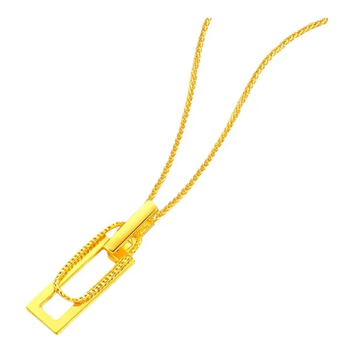
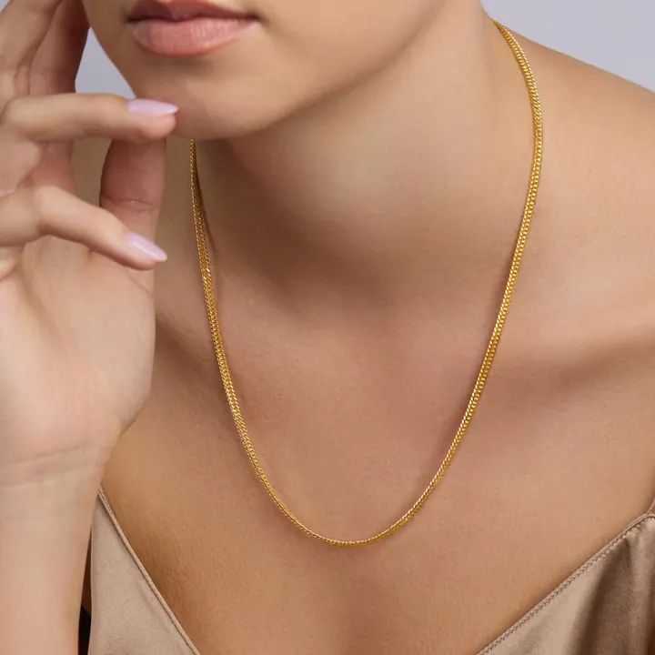

鉑金與鈀金：白色貴族的雙雄
鉑金是「最重最純」的白金，鈀金是「最輕最忙」的工業貴金屬——白色貴族的雙雄，各有各的王道。


核心定義
鉑金（platinum，Pt，第 78 號元素）：密度 21.45 g/cm³（比黃金更重）、熔點 1768°C、極度惰性——它是「最重、最純、最穩定」的貴金屬，珠寶常標「Pt950」（95% 鉑）。鈀金（palladium，Pd，第 46 號元素）：密度 12.0 g/cm³（輕）、同屬鉑族——它是汽車催化轉化器的核心材料。
鉑金首飾的賣點：純度高（Pt950 常見）、不過敏（惰性）、永恆白色（不褪色）——它比白 K 金（18K 白）更純更白。鈀金曾是白金的平價替代（2000 年代），如今因工業需求（汽車排放控制）價格劇烈波動。
特徵與分類
| 金屬 | 密度 | 熔點 | 用途 |
|---|---|---|---|
| 鉑金 | 21.45 | 1768°C | 珠寶/催化 |
| 鈀金 | 12.0 | 1555°C | 汽車催化/電子 |
| 白K金 | 約15 | — | 珠寶（合金） |
鉑金與「白 K 金」的區別：鉑金是純元素（Pt950 即 95% 鉑）、白 K 金是黃金合金（75% 金＋其他金屬，鍍銠增白）——鉑金本色白、不褪色；白 K 金鍍層磨損後露出微黃。
科學原理
鉑金的特性：極高密度（比黃金重）、極高熔點（1768°C）、極度催化活性（鉑是催化劑之王——汽車催化轉化器、化工都用它）。鉑的「白色」是本色——不需鍍層。
鈀金的特性：可吸收大量氫氣（儲氫材料）、催化效能極佳——汽車催化轉化器（三元催化）的核心。鈀的供需極度失衡時（2019-2022）價格曾超過黃金——「工業貴金屬」的劇烈性格。
鑑定與鑑別方法
- 看印記：Pt950、Pd950
- 掂密度：鉑金極重、鈀金較輕
- 酸測試：鉑金耐酸
- 區分白K金：本色 vs 鍍層
- 專業檢測：XRF 光譜
市場行情與保養建議
行情：鉑金價格穩定（工業＋珠寶需求），鈀金波動劇烈（汽車產業週期）——2022 年鈀金一度比黃金貴，如今回落。珠寶市場：鉑金是高端婚戒主流（純、白、不過敏），鈀金飾品相對小眾。
選購：珠寶選鉑金（Pt950 純白不過敏）；投資金屬看供需（鉑金穩定、鈀金高波動）。鉑金的「重」與「純」，是它貴的理由。
常見誤區
鉑金是純元素（Pt），白 K 金是黃金合金——純度、密度、本色都不同。鉑金貴在「純與白」，白 K 金是「金鍍白」。
鈀金是汽車催化轉化器的核心——全球鈀金需求大半來自汽車業。它「忙」得很，只是大家沒注意。
冷知識
密度 21.45——同體積比黃金重 11%。一枚鉑金戒指的「壓手感」，是它高級感的物理來源。
2022 年鈀金價格一度超越黃金（汽車需求＋供應緊張）——工業金屬的價格，可以比避險金屬更瘋。
反直覺觀點
鉑金首飾純度常達 95%（Pt950），黃金首飾最高 99.9% 但常見 75%（18K）——鉑金的「高純」與「高價」並存。
汽車的排氣管、化工廠的反應器，都靠鉑的催化——它不只在珠寶櫃裡，更在引擎蓋下。